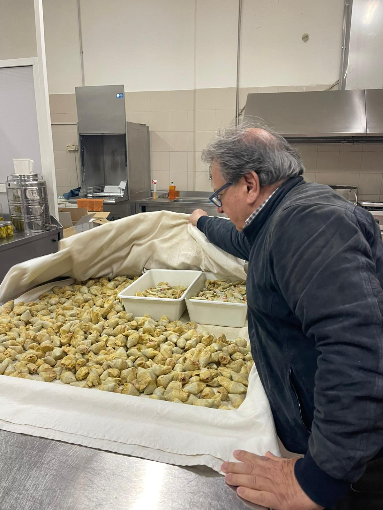
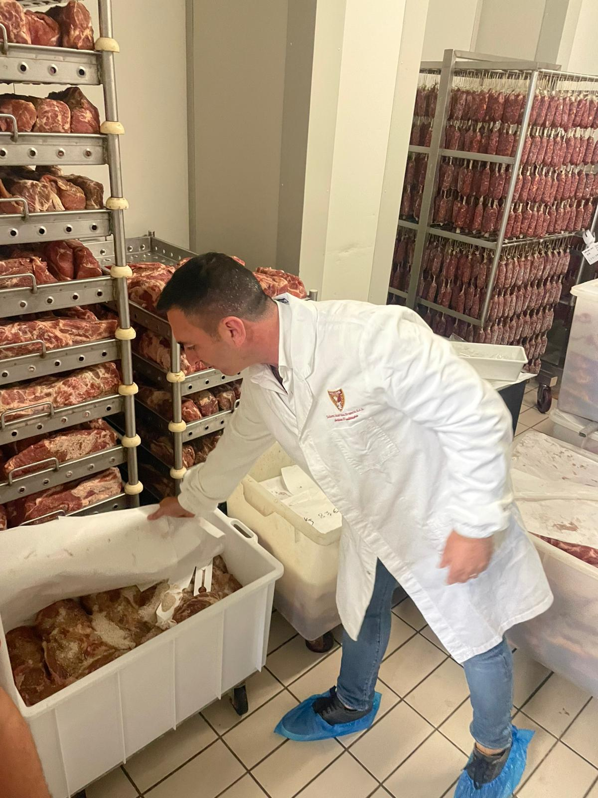
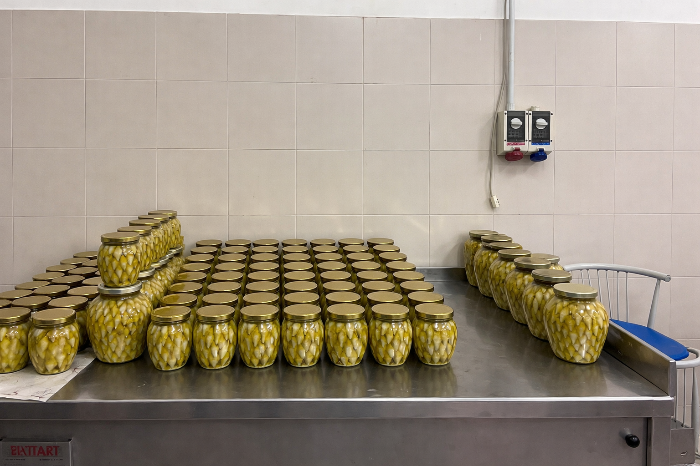
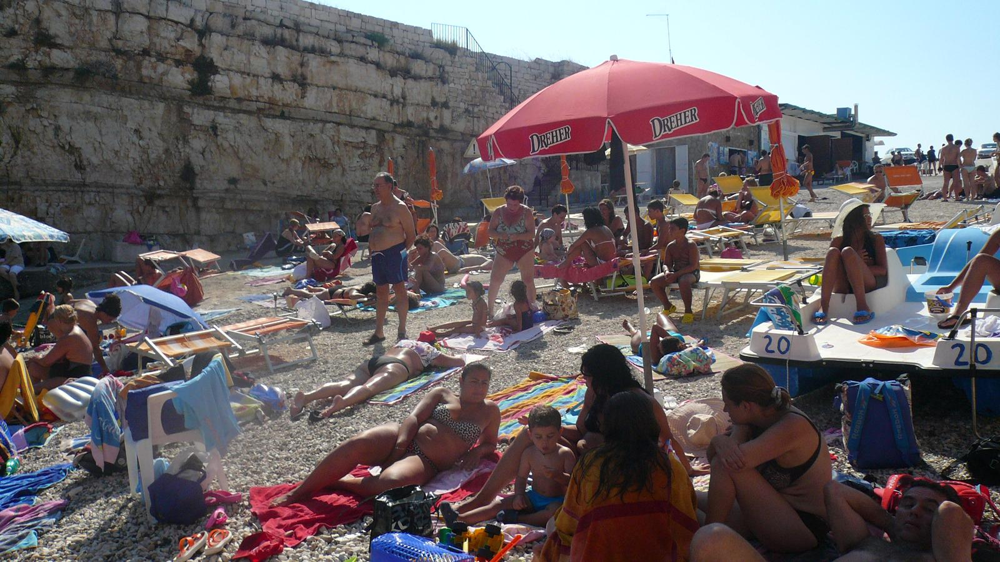

ABOUT US

PROPER CRAFTSMANSHIP
Bocca Alimentari is an Italian deli in the heart of Vesterbro, inspired by the small neighborhood alimentari you'll find across Italy. A place where food is taken seriously, but enjoyed casually.
We bake our focaccia fresh and slice our salumi by hand, to order. Our sandwiches are made daily using carefully selected ingredients — nothing rushed, nothing unnecessary.
OUR PHILOSOPHY
We work with homemade spreads and self-imported Italian hams of the highest quality, sourced directly from producers we trust.
Our philosophy is simple: great ingredients speak for themselves. No shortcuts. No compromises.



OPENING HOURS
Sunday - Monday CLOSED
Tuesday - Saturday 11:00 - 17:00